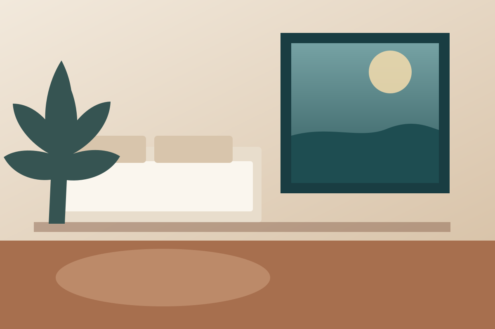

01
Проснуться
Ocean Studio
Проснуться
в сторону воды.
Большое окно становится главным объектом комнаты. Нейтральные материалы, низкая мебель и отдельное место для чтения поддерживают спокойный ритм.
- вид на океан
- терраса
- душевой блок
- место для чтения